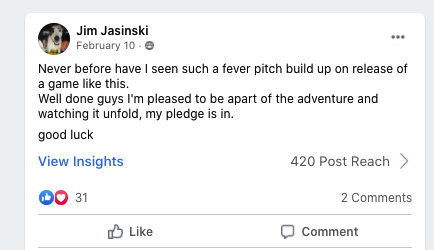
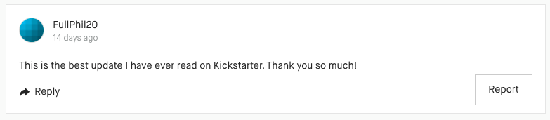
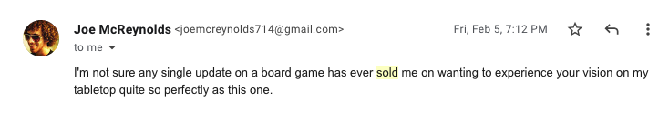

Good luck finding a copywriter in these dark times
It’s chaos out there — mobs of hungry freelancers are waving and yelling at you, trying to get hired. But actually finding a competent copywriter among them? It’s like searching for a decent surgeon among butchers and barbers.
IMAGINE IF A LOVED ONE HAD TO BE CUT OPEN, and you had no other choice but to send for the guy who trimmed your sideburns the day before.
If the barber was busy, you’d send for the grinning butcher with the bloody apron.
You’d just hope they’d show up with a steady hand. Either way it would be hit or miss.
That’s how it was with surgeons until about the 19 century, and that’s how it is with copywriters today.
From charlatans to masters, anyone can call themselves copywriters regardless of skill or experience.
The barbers among them might generate a few sales before they sweep out the remains of your butchered brand like so much trimmed hair and soiled bandages.
The best will handle your business with care, wielding the pen with the delicate precision of a modern surgeon.
How do you know which is which when looking for a copywriter for your business?
Here’s how.
A fellow copywriter of higher stature – or even better, an industry legend – went on record saying he was impressed with the writer’s copy
Barber-surgeons operated in dim backrooms, muffling their patients’ screams with bandages. Modern-day surgeons ply their trade openly in well-lit operating theaters as spectators observe them through a looking glass.
Likewise, copywriters who know their stuff work in the open. And they seek out feedback from peers at the pinnacle of their profession.
Wouldn’t it be reassuring to hear an A-list copywriter talk approvingly about your copywriter’s work?
For example, here’s how Amazon best-selling author Kevin Rogers, student of Gary Halbert’s protege John Carlton and his panel of hotshot writers critiqued a Facebook ad written by your candidate copywriter:
“I love the way you phrased these things in ways I haven’t heard before but I knew exactly what you meant.This is gold . . . I’m impressed with the copy”
– Kevin Rogers,
Author of 60-second Sales Hook and founder of Copy Chief
I love it… such good copy, as soon as people get into it, they’re gonna be hooked.
— Rachel Mazza,
DR copywriter and host of The Business of Writing podcast
Peer approval is good to have, but keep looking. You need harder evidence, such as…
The copywriter’s campaigns have delivered — even without the crutch of an established brand name
Overcoming the resistance of skepticism, lethargy, and price to make a sale from scratch is like extracting a firmly rooted tooth.
It would be reassuring to know that your candidate copywriter experienced this entire process without anyone working the tooth loose beforehand.
So look for copywriters who at least once started at zero. You want a copywriter who started with a client no one ever heard of, an empty mailing list, and a household advertising budget…and devised a campaign that raised just short of $300k.
Such a result was surely a big win for the discerning client who chose to work with such a copywriter. But then again, maybe the success was achieved despite the copy. There’s one way to know.
The copywriter uses words like smelling salts
Most people go through life half-sedated. Good copy ought to jolt readers back into wide-eyed consciousness like they sniffed a smelling salt.
You can tell the copy worked when readers react to like this:

 
All that said, you also need to make sure that…
The writer doesn’t degrade your brand like a snake-oil salesman
A competent copywriter is a partner who simplifies, sharpens and enhances your message, magnifying the impact your business has on people’s lives.
To accomplish that, the copywriter relies on an arsenal of persuasion techniques, using them as sharp operating instruments.
Good copywriters should know that some of these instruments should never be taken out of the case. The ones that make the copy drip with sleaze.
And the best are honest about the murky origins of the craft.
The pioneer of the profession, every copywriter’s great-grandfather, s Claude Hopkins. He picked up his persuasion techniques from patent medicine sellers of the 1890s – literal snake-oil salesmen.
Hopkins cleaned up and refined these techniques and applied them to convince Americans to brush their teeth and drink orange juice. But more than a hundred years later you can still follow the trail of rotten apples in the copywriting profession.
Yet, just as modern surgery overcame its dark origins of operating on screaming patients in dim and dirty backrooms, so should your copywriter candidate be a class act, protecting your brand’s reputation.
The copywriter is available
The final criterion to look for in your candidate is that he’s actually available for work. Even an A-lister is of little worth to you if he or she is scheduled for years in advance.
But if you’re reading this perhaps you got a lucky break.
My name is Srđan Mišić. Srđan is pronounced pretty much as Surgeon.
I am your copywriter.
Send me an email and let’s see if we can dissect your currently-running copy to score some quick wins for your business.
Send inquiries to: supersrdjan (at) gmail.com
Writings
- 2019/08/07 The revolution will be complete when the language is perfect
- 2018/12/29 Sanity is not statistical
- 2018/10/30 It’s a beautiful thing, the destruction of words
- 2018/08/30 Markdown Guide (modified)
- 2012/04/23 Hacker with Bullhorn
- 2012/03/12 Command Line Awesomeness
- 2012/01/23 Juicy Code
- 0001/01/01 About